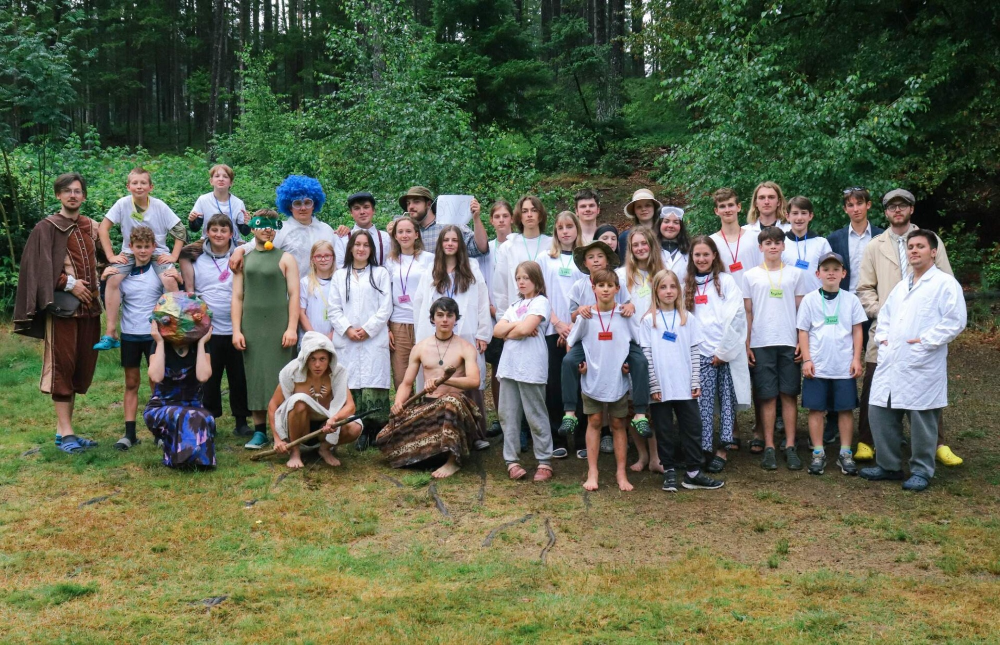

Letní tábor
Už máte program na prázdniny? Nemáte?
Jsme tábornický klub Modrý kruh, oddíl ROJ, působící v rámci pražské oblasti České tábornické unie a na tábor do Vlčí jámy na Jindřichohradecku jezdíme každý rok už přes třicet let. Vídáme se během celého roku, takže jsme sehraná parta, ale přáli bychom si poznat co nejvíc nových prima kamarádů.
Co je v Plánu?
Především budeme hrát napínavou celotáborovou hru. Její téma je ovšem do poslední chvíle pečlivě střeženo, dozvíme se ho vždy až u slavnostního zahajovacího ohně.
Zahrajeme si spoustu zábavných lesních, lučních, denních i nočních her, vyrobíme si něco pěkného, naučíme se tábornickým dovednostem a poznáme okolní přírodu. Také se vydáme na výlet do okolní krajiny a v horkých dnech se zchladíme v nedalekých rybnících nebo táborové hrázi.
Rodičovský víkend se letos NEKONÁ!
Jak?
Spíme po dvojicích ve stanech s podsadou. Objekt jídelny a kuchyně je pevnou stavbou ze dřeva a útočištěm před případným deštěm. Na tábořišti máme dále fotbalové (ač častěji používané coby softbalové) a volejbalové hřiště a samozřejmě ohniště na slavnostní ohně.
Díky sofistikovanému systému ohřevu vody v našich umývárkách je mytí v horké vodě častým a velice oblíbeným večerním programem. Na našem táboře je elektřina dostupná jen ve formě baterií - jediný proud, který Vlčí protéká, je ten Radíkovského potoku.
INFORMACE O TÁBOŘE
Kdy, kde a za kolik?
18.7. - 8.8.2026 – tři báječné týdny uprostřed lesů, luk a polí ve Vlčí jámě nedaleko Českého Rudolce. Uvítáme chlapce a dívky ve věku 7 – 14 let.
Pro další informace napište naší hlavní vedoucí Andří
email: andrea.holubova@modrykruh.cz
tel.: +420 737 245 522
(Cena tábora je 4300 Kč + 500 Kč příspěvek do ČTU/MK)
Sraz je 18. 7. 2026 v 9:00, autobus bude přistaven na autobusovém nádraží Na Knížecí. (Přesná lokace bude upřesněna.)
Návrat je 8 .8. 2026 cca v 17:00 tamtéž.
Přihlašování
Z důvodu lepší evidence o přihlášených dětech, letos prosím využijte přihlašovací FORMULÁŘ. Po jeho vyplnění bude vaše dítko zapsáno na seznam účastníků. Přihlašování končí 20.4. 2026 a přihlášku ve formátu pdf Vám zašleme do 24.4. 2026. Poté jí prosím vytiskněte a přineste podepsanou k autobusu při odjezdu na tábor.
Nováčci
Prosíme nováčky, kteří nejsou členy České Tábornické Unie, aby nám do 5.5. 2025 zaslali oskenovanou vyplněnou přihlášku do ČTU a souhlas se zpracováním osobních údajů.
Přihláška ČTU 2026.pdf Souhlas se zpracováním osobních údajů.pdfMapa příjezdu do tábora: